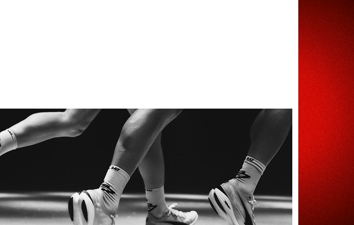

КАК БЕГ ПОМОГАЕТ ЧУВСТВОВАТЬ СЕБЯ УВЕРЕННЕЕ И СПОКОЙНЕЕ: ЧТО ВЛИЯЕТ НА ЭТО
top list

Когда тревога сжимает грудь, а неуверенность мешает сделать шаг вперёд, иногда самое простое решение — надеть кроссовки и выйти на пробежку. Бег — это не только физическая нагрузка, но и мощный инструмент для работы с эмоциями. Вот как регулярные пробежки меняют психологическое состояние и почему они делают нас устойчивее.
гормоны счастья: химия хорошего настроения
во время бега организм активно вырабатывает эндорфины,
дофамин и серотонин — гормоны, которые снижают стресс
и дарят чувство удовлетворения.
как это работает:
🞄 эндорфины действуют как естественное обезболивающее
и вызывают эйфорию («кайф бегуна»).
🞄 дофамин мотивирует и создаёт ощущение достижения.
🞄 серотонин стабилизирует эмоциональный фон, уменьшая
тревожность.
пример:
после 30-минутной пробежки даже в плохом настроении вы
заметите, что мир кажется менее враждебным, а проблемы —
решаемыми.
как применять:
если чувствуете упадок сил или тревогу, попробуйте лёгкую 20-
минутную пробежку в комфортном темпе. эффект проявится
почти сразу.
ритм и медитация: перезагрузка для мозга
монотонный бег в одном темпе действует как медитация — успокаивает ум и помогает «перезагрузиться».
почему это важно:
а — Ритмичное дыхание и повторяющиеся движения снижают активность миндалевидного тела (зоны мозга, отвечающей за страх).
в —Бег даёт возможность остаться наедине с мыслями или, наоборот, «отключиться» от них.
пример:
многие бегуны отмечают, что лучшие идеи приходят во время пробежки, когда мозг свободен от лишнего шума.
как применять:
сосредоточьтесь на дыхании (например, вдох на 3 шага, выдох
на 4) или слушайте подкаст, чтобы переключить внимание.
доказательство своей силы: уверенность через действие
каждая пробежка — это маленькая победа над ленью, страхом или сомнениями.
как это работает:
— регулярные тренировки формируют привычку добиваться целей (даже небольших).
— физическая выносливость проецируется на психологическую: «если я смог пробежать 5 км, то справлюсь и с другими сложностями».
пример:
человек, который начал с 1 км и через месяц пробегает 5 км, подсознательно чувствует: «я способен на большее».
как применять:
фиксируйте прогресс (в приложении или дневнике)
— это визуализирует ваш рост.

контроль над телом = контроль над эмоциями
бег учит осознанности: вы начинаете лучше чувствовать своё тело и управлять его реакциями. что меняется:
— умение распознавать усталость, напряжение или стресс на ранних этапах.
— способность «переключать» состояние через физическую активность.
пример:
когда вы знаете, что пробежка снимает раздражение, вы уже
не ждёте, пока эмоции накопятся, а действуете превентивно.
если ты...
🞄 хочешь перезагрузить мозг,
🞄 хочешь получить мгновенную «дозу» спокойствия,
🞄 хочешь укрепить веру в себя.
Не стремитесь к рекордам — первые пробежки могут длиться 10–15 минут.
Главное — регулярность и удовольствие. Уже через 2–3 недели вы заметите,
что стали спокойнее и увереннее не только на дорожке, но и в жизни.